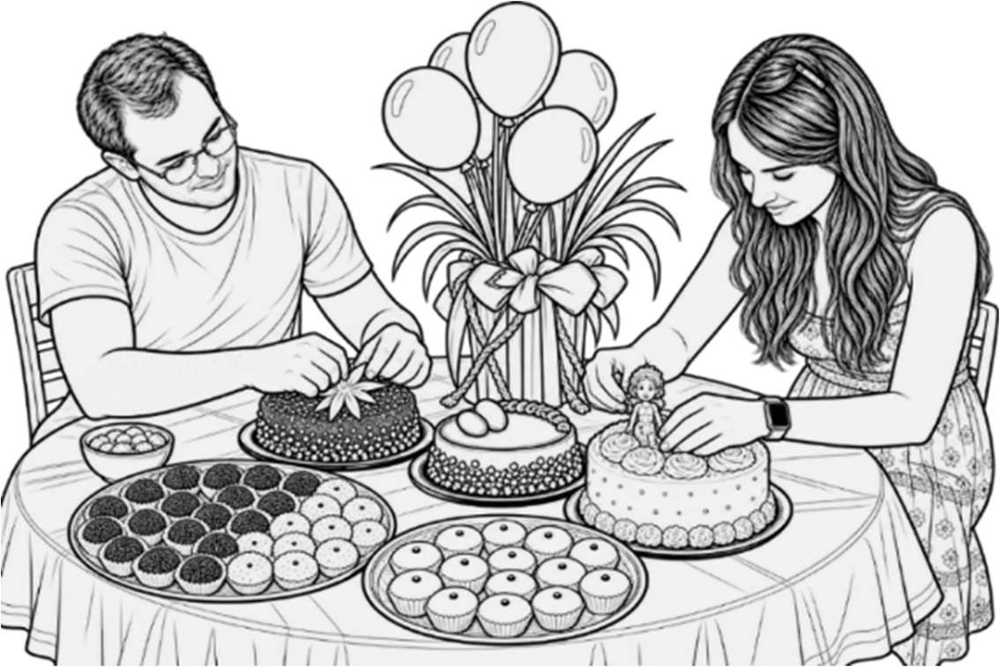

“Mãe, Vou Dar Uma Passadinha Aí!”

De repente, o telefone tocava.
— Mãe, vou dar uma passadinha aí!
Era a minha filha Lidiane. E pronto: a tarde já tinha outro gosto.
Ela morava longe, mas nunca se esqueceu do caminho de casa. E nunca chegava sozinha: trazia meus netos queridos e amados, Thaís e Thales.
A porta se abria, e a casa ganhava outro brilho. Os abraços ficavam mais demorados. As conversas, mais gostosas. E o meu coração se enchia daquela felicidade que só a família sabe dar.
“Passadinha”, eu já sabia, era só um jeito de dizer. Por isso, mal desligava o telefone, eu já estava na cozinha.
E sabe o que tinha nesses dias? Bolo de chocolate geladinho, o preferido dos meus netos.
Porque, para uma avó, não existe felicidade maior do que reunir a família ao redor da mesa e adoçar a vida de quem tanto ama. — Zelinda